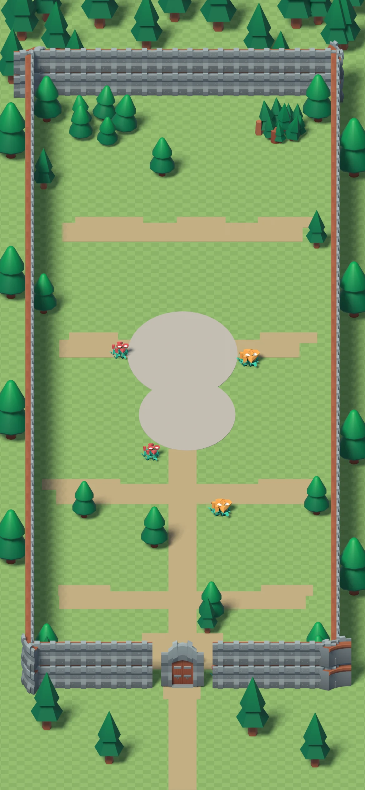

Ciclo de pasos real del pack KayKit (el mismo de la ciudad), pies pegados al suelo y sombra que acompaña. El guardia de la puerta es el Caballero; el herrero junto al Taller, el Bárbaro. Solo es una muestra: el juego no ha cambiado.
